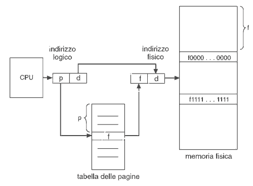
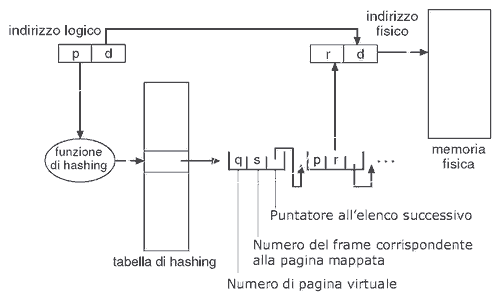
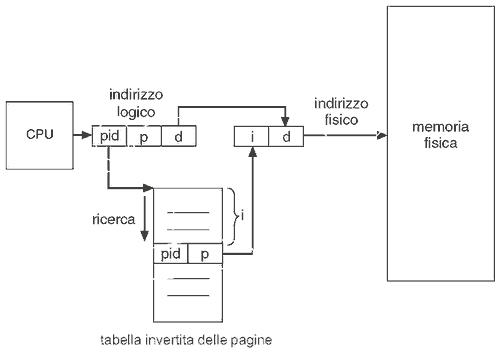
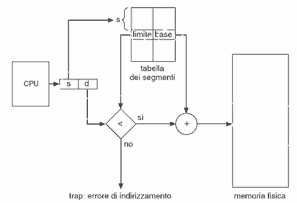

Torna alla pagina di Sistemi Operativi
:: Appunti 2.0 ::
Gestione della memoria centrale
Concetti generali
La memoria centrale è un componente essenziale di un moderno elaboratore, e consiste in un vettore di parole di memoria (o byte), ognuna delle quali ha un proprio indirizzo. Il processore caricherà nei propri registri istruzioni e dati presi direttamente da essa, in particolare da quella posizione indicata dal program counter. Il numero di accessi alla memoria durante la normale esecuzione di un processo può essere elevatissimo, dunque la sua gestione deve essere efficiente e rigorosa.
La memoria centrale vede solo flussi di indirizzi, ciò significa che ignora chi e come li generi e con quale scopo.
Collegamento degli indirizzi
I programmi risiedono generalmente su memorie secondarie sottoforma di file binari eseguibili, pronti ad essere attivati come processi. L'insieme dei processi in attesa di essere caricati in memoria centrale forma la cosiddetta coda di entrata, dalla quale ne verrà selezionato uno (o più) da caricare e mandare in esecuzione; a computazione terminata, le risorse allocate (quindi anche i bytes) torneranno ad essere disponibili per gli altri.
I processi non possono essere caricati a partire da un indirizzo qualunque, ma bisogna effettuare diversi passaggi (alcuni facoltativi) durante i quali dati/istruzioni e rispettivi indirizzi saranno collegati in modo diverso.
- Collegamento in fase di compilazione, quando si conosce esattamente dove verrà caricato il processo già al momento della compilazione. Viene generato un codice assoluto, che sarà statico, fisso e immutabile (se la locazione di partenza cambia bisogna ricompilare il codice)
- Collegamento in fase di caricamento. Se al momento della compilazione non si sa ancora dove risiederà il processo, allora il compilatore dovrà generare un codice rilocabile. In pratica il sistema operativo decide a partire da quale indirizzo caricare il processo in memoria, e quella locazione sarà l'indirizzo 0 relativo in base al quale verranno allocati tutti gli altri dati/istruzioni del processo. Il collegamento all'indirizzo assoluto in memoria centrale avviene in fase di caricamento
- Collegamento in fase di esecuzione, caratteristico di quei processi che possono essere spostati da una zona all'altra anche durante l'esecuzione. Necessita di un hardware preposto a tale compito, ovvero un' unità di gestione della memoria centrale (MMU) configurata opportunamente, ed è il tipo di collegamento maggiormente usato nei vari sistemi operativi
Spazio di indirizzamento logico e fisico
L' indirizzo fisico è l'indirizzo nello spazio di memoria centrale che individua in modo univoco una parola in esso contenuta. Lo spazio di indirizzamento fisico è un vettore lineare che va da 0 all'ultimo spazio indirizzabile del chip di memoria.
L' indirizzo logico è invece un indirizzo astratto, consistente solo all'interno dello spazio di indirizzamento del processo, rappresentandone lo spiazzamento rispetto alla prima parola. Lo spazio di indirizzamento logico è dunque lo spazio indirizzabile dal nostro processo, e la sua prima parola corrisponde ad un certo indirizzo fisico detto indirizzo di base. Al processo non interessa se al di là dei confini del proprio spazio di indirizzamento siano caricate parole associate ad altri processi, tanto lui non potrà accedervi come gli altri non possono accedere al suo.
I metodi di collegamento degli indirizzi in fase di compilazione e caricamento generano indirizzi logici e fisici identici, cosa che invece non accade in fase di esecuzione. In quest'ultimo caso la responsabilità di trasformarli è demandata a un dispositivo ausiliario hardware che abbiamo già nominato, ovvero la MMU. Il sistema di trasformazione semplice consiste nell'utilizzo del registro di rilocazione, il cui valore viene aggiunto ad ogni indirizzo generato dal processo nel momento in cui viene inviato in memoria. La formula generale è: indirizzo fisico = indirizzo logico + offset, dove l'offset è lo spiazzamento tra lo 0 logico del processo e la sua mappatura effettiva in memoria centrale. Grazie a questo mappaggio il processo non vede mai gli indirizzi fisici reali, ma tratta solo quelli logici che sono molti meno del totale quindi più semplici e veloci da manipolare.
Ricapitolando: gli indirizzi logici vanno da 0 a un valore massimo, mentre i corrispondenti indirizzi fisici vanno da R+0 a R+valore massimo (dove R è il valore del registro di rilocazione). Nella fase di linking dei programmi, viene eseguito il calcolo degli indirizzi logici a partire da quelli simbolici generati dalle chiamate di sistema invocate. Nella fase di binding si passa invece dall'indirizzo logico a quello fisico; può avvenire durante la compilazione, o nel momento del loading del programma, o anche durante l'esecuzione (soprattutto se ho librerie dinamiche).
Caricamento dinamico
Dato che per essere eseguito un programma deve risiedere in memoria centrale, come fare quando le sue dimensioni superano quelle della memoria stessa? La soluzione è il caricamento dinamico, che prevede inizialmente il caricamento di un insieme di procedure fondamentali e il mantenimento delle altre su disco in formato di caricamento rilocabile; nel caso in cui queste ultime si rivelino necessarie, verrà richiesto a un loader di caricarle e di aggiornare la tabella degli indirizzi del programma. Il vantaggio di tale sistema è che non si spreca inutilmente spazio di memoria per procedure che vengono utilizzate raramente (come quelle di gestione degli errori). Il sistema operativo non gestisce direttamente il caricamento dinamico, la sua reale implementazione è lasciata ai programmatori.
Collegamento dinamico e librerie condivise
Utilizzare collegamenti dinamici piuttosto che statici alle librerie di sistema consente di risparmiare spazio sia su memorie di massa che in quella centrale. Il motivo è semplice: un collegamento statico considererebbe le librerie come un qualsiasi altro modulo da caricare, quindi ogni programma dovrebbe incorporarne una copia nel file eseguibile e nel suo spazio di indirizzamento. Con i collegamenti dinamici (attuati in fase di esecuzione) viene invece inclusa nell'eseguibile un' immagine (stub) che indica come individuare la procedura di libreria desiderata già residente in memoria, o come reperirla dal disco se non è presente. In questo modo tutti i processi che usano una stessa libreria eseguiranno una sola copia del codice.
Il sistema a librerie condivise estende i vantaggi del collegamento dinamico, consentendo inoltre di aggiornare le versioni delle librerie e di fare in modo che ogni programma utilizzi quella a sé compatibile.
Al contrario del caricamento dinamico, il collegamento dinamico può richiedere l'intervento del sistema operativo, ad esempio in quei casi in cui un processo avrebbe bisogno di una procedura contenuta nello spazio di indirizzamento di un altro.
Overlay
Se il caricamento dinamico offriva una soluzione all'esecuzione dei processi con dimensioni maggiori della memoria centrale, la tecnica dell' overlay consente a un processo di essere più grande della quantità di memoria a esso allocata, ovvero al suo spazio di indirizzamento. Il principio è simile: mantenere in memoria solo le istruzioni e i dati che sono necessari in un certo momento, rimpiazzando man mano quelle più vecchie. Si può dire che un overlay è una sorta di partizione del programma di partenza, indipendente dagli altri e quindi in grado di compiere autonomamente tutta una serie di operazioni che lo caratterizzano. Quando la sua esecuzione parziale del programma si esaurisce, viene deallocato e al suo posto ne viene caricato un altro.
Gli overlay non richiedono alcun supporto speciale da parte del sistema operativo, è compito del programmatore definirne il numero e le suddivisioni. Questo si rivela però un compito improbo, dato che i programmi in questione sono generalmente molto grandi (per quelli piccoli questa tecnica non è evidentemente necessaria) e suddividerli in parti implica una conoscenza puntigliosa della loro struttura. Inoltre i moduli possono avere dimensioni diverse, con conseguenti sprechi di spazio quando se ne caricheranno alcuni di grandezza più ridotta. Troppe responsabilità al programmatore e sfruttamento della memoria centrale poco efficiente fanno così dell'overlay una tecnica utilizzata solo per sistemi con poca memoria fisica e supporto hardware poco avanzato.
Swapping
In un sistema operativo multitasking è naturale che tra i processi caricati in memoria centrale alcuni non stiano facendo niente, o perché sono in attesa o perché hanno bassa priorità. Ciò però comporta uno spreco di spazio, cui si può far fronte adottando la tecnica dello swapping. In breve essa consiste nello scambiare temporaneamente un processo in attesa con un altro in stato di pronto o running che si trova in una memoria temporanea (backing storage), tipicamente un disco veloce. Nello specifico avremo quattro fasi:
- identificare i processi in stato di attesa
- salvare sulla memoria temporanea i loro dati sensibili (dati globali, heap, stack)
- rimuovere dalla memoria centrale tali processi (scaricamento)
- caricare nello spazio appena liberato quei processi in stato di pronto o running che si trovavano nella memoria temporanea (caricamento).
Una variante di questa tecnica è il roll out/roll in, che individua i processi da caricare e scaricare in base alla loro priorità.
Lo swapping si applica sugli interi processi ed impone almeno due vincoli. Il primo è che si possono spostare solo quei processi in stato di riposo; il secondo è che non si possono spostare quei processi che hanno invocato una chiamata di funzione e sono ancora in attesa di una risposta, o il processo che gli subentrerebbe la riceverebbe al posto suo. Possibili soluzioni sono impedire lo swap di processi in attesa di I/O oppure permetterlo solo a quelli che usano i buffer condivisi del sistema operativo.
Lo swapping standard ha come vantaggio l'aumento del grado di multiprogrammazione del sistema, ma essendo gestito automaticamente dal sistema operativo ed essendo applicato agli interi processi comporta un netto rallentamento delle prestazioni. Una versione modificata viene invece utilizzata in molti sistemi operativi UNIX, in cui ad esempio viene attivato solo quando esaurisce lo spazio in memoria centrale e solo fintanto non se ne libera un po'.
Allocazione contigua di memoria
L' allocazione contigua di memoria è un metodo per allocare nel modo più efficiente possibile sia il sistema operativo che i processi degli utenti in memoria centrale. Il primo viene generalmente memorizzato nella parte bassa della memoria centrale, separato dalle sezioni riservate ai processi da un vettore di interrupt.
Protezione della memoria centrale
Proteggere la memoria centrale significa garantire che non avvengano al suo interno accessi illegali da parte dei processi, dove per accessi illegali si intendono quelli al di fuori del proprio spazio di indirizzamento (che sconfinano quindi in quello del sistema operativo o di altri processi). La protezione avviene attraverso l'utilizzo congiunto di due registri che fanno parte del contesto di ogni processo:
- il registro di rilocazione, che contiene il valore del più piccolo indirizzo fisico
- il registro limite che contiene l'intervallo degli indirizzi logici, quindi la dimensione in byte dello spazio di indirizzamento
Quando lo schedulatore seleziona un processo da mandare in esecuzione, la Memory Management Unit si occuperà di verificare che ogni indirizzo logico sia inferiore del registro limite associato, dopodiché lo mapperà dinamicamente aggiungendogli il valore del registro di rilocazione. L'indirizzo così ottenuto è inviato in memoria centrale.
Il registro di rilocazione fa inoltre in modo che le dimensioni del sistema operativo cambino dinamicamente, rendendo possibile l'utilizzo o meno di parte del codice (detto transiente).
Allocazione della memoria centrale
Uno dei metodi più semplici per allocare memoria centrale consiste nel suddividerla in partizioni, ciascuna delle quali può contenere al più un processo. Dal loro numero dipende il grado di multiprogrammazione del sistema. In particolare, con il metodo delle partizioni multiple quando un processo termina la sua computazione viene sostituito con uno selezionato dalla coda dei processi pronti.
Abbiamo due schemi di partizionamento:
- schema a partizione fissa, in cui si hanno partizioni di dimensione statica (definite al bootstrap) e una tabella aggiornata che indica quali parti della memoria centrale sono disponibili e quali occupati (inizialmente sono tutti liberi). Man mano che i processi si attivano, vengono messi in una coda di entrata gestita con un qualsiasi algoritmo di schedulazione; il sistema operativo valuterà le loro richieste di memoria e cercherà di allocarli in blocchi abbastanza grandi da ospitarli. Se tale ricerca fallisce, il processo entra in stato di attesa e vi rimarrà finché un altro non avrà terminato la sua computazione e quindi reso disponibile la partizione che occupava
- schema a partizione variabile, che a differenza dello schema precedente consente di modificare l'indirizzo di base delle varie partizioni rendendo di fatto possibile variarne le dimensioni, ad esempio unendo blocchi contigui precedentemente distinti o suddividendone uno particolarmente sovradimensionato.
Nello schema a partizione variabile la configurazione dello spazio disponibile continua a variare, dunque il sistema dovrà controllare spesso se la situazione è diventata favorevole per il caricamento di uno dei processi in attesa nella coda di entrata. Questo viene anche chiamato problema dell'allocazione dinamica della memoria centrale, per il quale sono percorribili tre strategie:
- first-fit, che assegna il primo blocco libero abbastanza grande per contenere lo spazio richiesto
- best-fit, che assegna il più piccolo blocco libero che lo può contenere
- worst-fit, che assegna il più grande blocco libero che lo può contenere
Le simulazioni hanno dimostrato che le strategie migliori sono le prime due, in particolar modo la first-fit che è la più veloce.
Frammentazione
Il problema del first-fit e del best-fit è che soffrono di frammentazione esterna, ovvero lasciano dei blocchi liberi fra quelli occupati, blocchi che se fossero uniti e contigui potrebbero ospitare un altro processo. Questo accumularsi di spazio non sfruttato alla lunga comporta un considerevole abbassamento delle prestazioni, cosa particolarmente grave se si pensa che nel caso peggiore potrebbe soffrire di frammentazione esterna ogni coppia di blocchi. Il problema non è evitabile: la regola del 50 per cento dice che su N blocchi allocati con la first fit ne andranno persi N/2 a causa della frammentazione. Bisogna dunque fare in modo di ottimizzare la situazione a posteriori.
Una prima soluzione è la compattazione, ovvero la fusione di tutti i blocchi liberi in uno solo. Tuttavia questa tecnica può essere applicata solo se la rilocazione è dinamica ed è fatta al momento dell'esecuzione, dato che in tal caso basterebbe spostare programma e dati. Si tratta inoltre di un procedimento piuttosto costoso.
Altra contromisura è permettere allo spazio di indirizzo logico di un processo di essere non contiguo, un'idea che verrà usata con profitto dalle tecniche di paginazione e segmentazione che vedremo poi.
Se abbiamo la frammentazione esterna non possiamo certo farci mancare anche la frammentazione interna, che si presenta quando carichiamo all'interno di un blocco un processo più piccolo della sua dimensione. Lo scarto di spazio tra la dimensioni del processo e del blocco rappresenta la frammentazione.
Paginazione
La paginazione è uno schema di gestione della memoria centrale che, nel tentativo di superare gran parte dei problemi di gestione visti finora, si prefigge i seguenti obiettivi:
- caricare e scaricare solo piccole porzioni di memoria, evitando così l'overhead dello swapping
- mantenere in memoria solo le parti che servono
- non sprecare spazio, per quanto possibile
- poter utilizzare porzioni di memoria non contigue per lo stesso programma
- essere indipendentemente dal programmatore, ma gestito dall'hardware e in modo integrato col sistema operativo
E' usata nelle sue varie forme nella maggior parte dei sistemi operativi, ed è quasi esclusivamente gestita dall'hardware anche se negli ultimi processori a 64 bit è sempre più integrata con il sistema operativo stesso.
Metodo base
Il metodo base per implementare la paginazione è suddividere la memoria fisica (centrale e ausiliaria) in blocchi di dimensione fissa chiamati frame (o pagine fisiche), e la memoria logica in blocchi di uguale dimensione detti pagine (o pagine logiche).
Gli indirizzi generati dalla CPU sono divisi in due parti, ovvero il numero di pagina (p) e lo spiazzamento nella pagina o offset (d). Il numero di pagina viene usato come indice nella tabella delle pagine, che contiene gli indirizzi iniziali di tutti i frame presenti nella memoria fisica; la combinazione di tali indirizzi base con lo spiazzamento permette di ottenere l'indirizzo fisico associato. Dato poi che è il sistema operativo a gestire la memoria centrale, dovrà sapere esattamente quali blocchi sono liberi e quali in uso; è stata a tal fine introdotta la tabella dei frame, che per ogni frame sa dire se è libero o occupato, e in quest'ultimo caso anche da chi. Riassumendo:
- indirizzo logico = (p, d)
dove p è il numero di pagina logica e d è lo spiazzamento
- indirizzo fisico = (f, d)
dove f è il numero di pagina fisica
- tabellaPagine[PaginaLogica] = PaginaFisica se è caricata, niente altrimenti
La dimensione dei blocchi è decisa dall'hardware ed è generalmente una potenza di 2 per semplicità rappresentative. Con la paginazione non si ha frammentazione esterna perché le dimensioni di pagine e frame coincidono e possono essere assegnate anche in modo non contiguo. Perdura invece il problema della frammentazione interna, dato che non è sempre vero (anzi, lo è di rado) che un processo riempia interamente tutti i suoi frame. Riducendo le dimensioni dei frame l'entità della frammentazione interna diminuisce, ma allo stesso tempo si riducono le prestazioni e l'efficacia di operazioni importanti quali i trasferimenti.
Notare la netta separazione tra la visione che ha l'utente della memoria centrale con la sua realtà implementativa: l'utente vede la memoria come un unico singolo spazio contiguo in cui è caricato tutto e solo il suo programma che invece si trova sparpagliato nella memoria fisica in mezzo ad altri. Il sistema operativo si prende l'onere di rimappare gli indirizzi fisici in modo da garantire al tempo stesso il corretto funzionamento del processo e l'impedimento di accessi non autorizzati.
Come supporto per la gestione della memoria fisica il sistema operativo mantiene per ogni processo una copia della tabella delle pagine, che indica per ogni pagina se questa è allocata e in quest'ultimo caso in quale frame.
Ultima nota: il mantenimento per ogni processo di una copia della tabella delle pagine inciderà sui tempi di cambiamento di contesto.
Supporto hardware
Ogni sistema operativo ha il suo sistema di memorizzazione della tabella delle pagine, la maggior parte dei quali ne alloca una per ogni processo. Nel caso più semplice, ovvero quando sono pochi i processi da gestire, vengono utilizzati con profitto una serie di registri ad alta velocità dedicati.
Nei computer odierni però la tabella delle pagine è estremamente grande (fino a un milione di elementi), quindi ai registri si preferisce un'altra soluzione: il mantenimento della tabella in memoria centrale con l'utilizzo di un registro base che la referenzi, così che sia sufficiente modificare quest'ultimo per puntare a un'altra. L'aspetto negativo di questo sistema è che per ogni accesso a un byte se ne deve prima effettuare un altro in tabella, dunque avrei un rallentamento di fattore 2. Per questo motivo viene utilizzata una piccola cache hardware per l'indicizzazione veloce, la memoria associativa (Translation Look-Aside Buffer, TLB). Ogni elemento contenuto in essa è costituito di due parti: una chiave (tag) e un valore. Il meccanismo è il seguente:
- la CPU genera un indirizzo logico il cui numero di pagina viene presentato alla TLB
- se il numero di pagina viene trovato significa che il corrispondente numero di frame è immediatamente disponibile e viene rilasciato per l'accesso alla memoria centrale
- se il numero di pagina non è presente (TLB-miss) la TLB deve procurarselo insieme al numero di frame facendo riferimento alla memoria centrale. Il nuovo elemento della TLB può essere aggiunto alla tabella e se non c'è abbastanza spazio si possono rimpiazzare gli elementi esistenti con logiche LRU ("quello usato meno di recente viene rimpiazzato") o più semplicemente a caso
Vediamo uno schema:

La frequenza con cui un particolare numero di pagina viene richiesto nella TLB è il tasso di accesso con successo (hit-ratio).
Alcune TLB memorizzano anche gli identificatori dello spazio degli indirizzi (ASID) che identificano appunto in modo univoco a quale processo è associata una determinata coppia chiave-valore; in questo modo la TLB può contenere contemporaneamente gli indirizzi di diversi processi. Se invece gli ASID non sono supportati, la TLB andrebbe flushata ad ogni cambio di contesto o si rischierebbe di ricevere come risposta dei numeri di frame che appartengono allo spazio di indirizzamento di altri processi.
Protezione
La protezione della memoria centrale viene garantita esplicitamente con bit di protezione associati a ogni frame. Questi possono indicare se l'accesso al frame è consentito in sola lettura (es. costanti), o in lettura-scrittura (es. dati), o in sola esecuzione (es. codice) o ancora se è dentro o fuori lo spazio di indirizzamento del processo. Quest'ultimo bit è detto di validità/non validità e protegge dunque la memoria centrale da accessi illegali.
Alcuni sistemi hanno invece un hardware detto registro della lunghezza della pagina preposto alla protezione degli spazi di indirizzamento, che indica la dimensione della tabella delle pagine.
Tutti i tentativi illegali di accesso sollevano in genere una trap del sistema operativo, che la gestirà in modo opportuno.
Struttura della tabella delle pagine
Paginazione gerarchica
Dato che i sistemi operativi moderni hanno un vasto spazio di indirizzamento logico, la tabella delle pagine diventa eccessivamente grande, dunque è preferibile suddividerla in parti più piccole. Questo sistema è detto delle paginazioni gerarchiche.
Ci sono diversi modi per realizzarla, il primo dei quali potrebbe essere l'utilizzo di una paginazione a due livelli, in cui la tabella stessa è paginata. Avremo dunque un indirizzo logico con tre valori: p1 (indice nella tabella esterna), p2 (spostamento nella pagina delle tabelle a partire da p1), d (spiazzamento della pagina). Questo schema è detto anche della tabella delle pagine mappate in avanti.
Una variante è il VAX, che divide lo spazio di indirizzamento logico in quattro sezioni uguali, individuate dai 2 bit più significativi.
La tabella esterna delle pagine può essere a sua volta paginata, arrivando a 3 livelli (accade ad esempio nello SPARC); addirittura alcuni Motorola arrivano a 4.
Per le architetture a 64bit le tabelle di paginazione gerarchiche sono invece inadeguate perché richiederebbero un numero proibitivo di accessi ai vari livelli di paginazione per tradurre con profitto l'indirizzo logico.
Tabella delle pagine con hashing
Nella tecnica della tabella delle pagine con hashing ogni elemento della tabella è composto da tre campi: q (numero della pagina virtuale), s (numero del frame corrispondente), puntatore all'elemento successivo.
La pagina virtuale (p) dell'indirizzo logico generato dalla CPU è usata come argomento di una funzione di hash, che permette di ottenere una tabella di hashing più piccola di quella di partenza. L'algoritmo funziona così:
- si applica la funzione di hash al numero della pagina contenuto nell’indirizzo virtuale, identificando un elemento nella tabella di hashing
- si confronta il numero di pagina virtuale con l’elemento contenuto nella q del primo elemento della lista concatenata corrispondente
- se i valori coincidono, si usa il campo s per generare l’indirizzo fisico
- altrimenti si esamina l'elemento successivo della lista

Una variante è la tabella delle pagine a gruppi, particolarmente adatta nei sistemi a 64bit, in cui ogni elemento della tabella di hashing si riferisce a più pagine (di solito 16).
Tabella delle pagine invertita
Finora abbiamo visto che le tabelle delle pagine associate a ciascun processo restituivano il numero di frame corrispondente al numero di pagina indicato nell'indirizzo logico. Dato però che ognuna di esse può contenere milioni di elementi e che ci possono essere molti processi attivi simultaneamente si avrà un'enorme occupazione di spazio.
Una soluzione che ribalta la prospettiva appena illustrata è quella della tabella delle pagine invertita, in cui si mantiene un'unica tabella che avrà un elemento per ogni pagina fisica della memoria centrale. Ognuno di questi elementi è composto da un ASID (necessario perché la tabella contiene parecchi spazi di indirizzamento appartenenti a processi differenti), il numero di pagina logica memorizzata in quel frame e lo spiazzamento.
Questa tecnica permette di diminuire la quantità di memoria centrale necessaria per memorizzare ogni tabella, garantendo sempre la legalità degli accessi. Per contro ha però l'aumento del tempo necessario per cercare nella tabella quando si hanno riferimenti alla pagina, dal momento che nel caso peggiore bisogna scandirla tutta. A tal proposito si può utilizzare una tabella invertita con hashing, che velocizza la ricerca ma richiede due accessi. Insomma, le soluzioni ci sono, va solo cercato il giusto equilibrio.

Pagine condivise
La paginazione consente con relativa facilità la condivisione di alcune pagine fisiche tra diversi processi, in modo da risparmiare una considerevole quantità di spazio. Ad esempio imporre una protezione in sola esecuzione su alcune pagine realizza di fatto la condivisione di tali porzioni di memoria seppur virtualmente disgiunte.
I sistemi che usano tabelle delle pagine invertite hanno però maggiori difficoltà implementative: se infatti in quelle standard è possibile fare in modo che a diversi numeri di pagina siano associati gli stessi frame, quelle invertite assegnano per definizione un'unica pagina a un dato frame. Vanno trovate soluzioni alternative.
Segmentazione
Metodo base
Un limite della paginazione è che non consente di tipizzare le varie porzioni di spazio di indirizzamento logico, distinguendo ad esempio l'area del codice da quella dei dati, il che diventa un problema quando si vogliono fare controlli mirati su parti specifiche di programmi di grosse dimensioni. Per lo stesso motivo non si possono nemmeno effettuare condivisioni semplici ed efficienti di porzioni di memoria omogenei per scopo e tipo, ad esempio tutta la parte di codice.
La segmentazione è uno schema di gestione della memoria centrale che mantiene gran parte degli obiettivi della paginazione, compresa la separazione tra memoria logica e fisica, ma suddivide quest'ultima in segmenti di dimensione variabile ognuno con un proprio nome che lo individua (spesso un numero per semplicità implementativa). Il suo nuovo obiettivo sarà dunque dare una consistenza logica alle porzioni di spazio di indirizzamento dei processi, supportandone la tipizzazione e una più efficace condivisione.
Hardware
Nella segmentazione la memoria centrale fisica è divisa in segmenti fisici (frame) di dimensioni diverse, mentre lo spazio di indirizzamento del processo è diviso in segmenti logici (segmenti). Notare che un segmento è tipizzato ed è caricato in un frame di medesima dimensione.
In modo analogo alla paginazione, la traduzione degli indirizzi logici avviene attraverso una tabella dei segmenti in cui ogni elemento ha una base di segmento (indirizzo fisico di partenza) e un limite del segmento (la sua lunghezza). I segmenti di un processo possono essere caricati in frame non contigui in memoria centrale fisica, mentre quelli non caricati sono conservati nell'area di swap.
L'indirizzo logico è costituito dal numero di segmento (s) e dallo spiazzamento (d). Ogni indirizzo prodotto dalla CPU viene controllato utilizzando la tabella dei segmenti, accertandosi che rientri nei valori legali ad esso consentiti. Ad esempio se lo spiazzamento è maggiore del valore del limite, allora verrà impedito l'accesso.

L'hardware dedicato per il supporto alla segmentazione è anche in questo caso la MMU, stavolta orientata alla gestione dei segmenti.
Protezione e condivisione
Il fatto stesso di suddividere la memoria centrale (e dunque di riflesso anche i processi che la occupano) in blocchi semanticamente omogenei, i segmenti appunto, facilita e velocizza le operazioni di protezione e condivisione dato che è plausibile che elementi facenti parte dello stesso segmento vadano trattati nello stesso modo. Le tecniche sono quelle già viste per la paginazione.
Frammentazione
La frammentazione esterna è un problema per la segmentazione dal momento che i segmenti sono di dimensione variabile e quindi non sempre coincidono con le pagine di dimensione fissa della memoria fisica. Dato però che per sua stessa natura la segmentazione avviene con una rilocazione dinamica, è possibile adottare sistemi di compattazione che riducono il problema. Se in aggiunta vengono effettuate valutazioni ben ponderate da parte dello schedulatore a lungo termine, si può mantenere la frammentazione esterna sotto controllo.
Segmentazione con paginazione
Abbiamo visto che paginazione e segmentazione presentano vantaggi e svantaggi, ma con la loro combinazione è possibile migliorarle a vicenda prendendo il meglio di ognuna:
- dalla paginazione si prende l'identificazione dei frame liberi, la scelta del frame libero in cui caricare una pagina, nessuna frammentazione
- dalla segmentazione si prende la verifica degli accessi e delle operazioni, la condivisione di porzioni di memoria
La memoria centrale fisica è divisa in pagine fisiche (frame) di dimensione fissa, mentre lo spazio di indirizzamento del processo è suddiviso in segmenti logici (segmenti) di dimensioni diverse ciascuno suddiviso in pagine logiche. I segmenti contengono informazioni di tipo diverso (sono quindi tipizzati), mentre le pagine di cui sono costituiti sono porzioni indifferenziate del loro spazio di indirizzamento. Notare che i frame hanno la stessa dimensione delle pagine logiche, che infatti vengono caricate in essi.
L'indirizzo logico è dunque costituito dalla tripla: s (numero di segmento), p (numero di pagina), d (spiazzamento della pagina).
L'indirizzo fisico invece è rappresentato come: f (numero di frame), d (spiazzamento nel frame).
E' il sistema operativo che gestisce tutto automaticamente, avvalendosi della MMU opportunamente configurata come supporto hardware dedicato per la traduzione dell'indirizzo logico in quello fisico.
Torna alla pagina di Sistemi Operativi